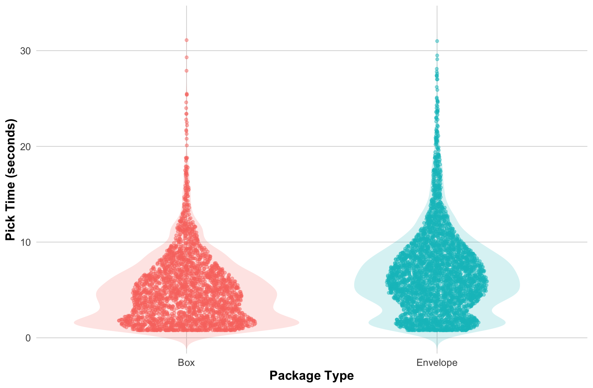
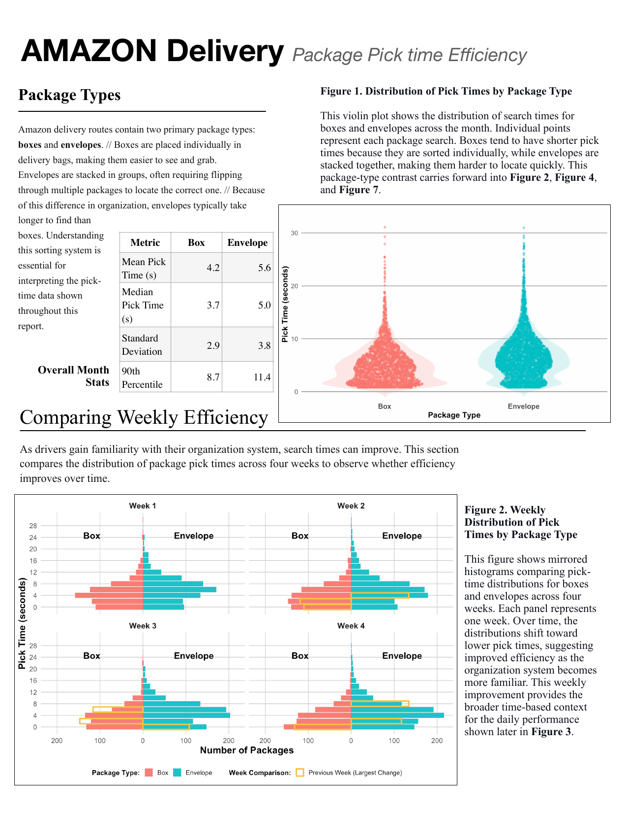

The approach I encountered
Organize before picking.
The routine I was instructed to follow involved sorting packages before beginning the sequence of deliveries. I wondered whether that initial effort always paid off during the route.
Bellevue University · Applied visualization project
I questioned a package organization routine I encountered as an Amazon delivery driver. I used firsthand observations to motivate a simulated workflow and designed a visual report to explore how package type, bag density and picking sequence could affect search time.
01 / THE QUESTION
While working as a delivery driver, I began to question whether organizing every package in advance was necessarily the most efficient approach.
The approach I encountered
The routine I was instructed to follow involved sorting packages before beginning the sequence of deliveries. I wondered whether that initial effort always paid off during the route.
The approach I wanted to investigate
My own approach separated boxes and envelopes and relied on locating the next required package as the collection became smaller.
The research question: What does my package-picking strategy look like in the data, and how could a later study compare it with other approaches? This was a visualization course project, not a controlled comparison of the two methods.
02 / FIRSTHAND OBSERVATION
I developed a repeated recording routine around my existing workflow. The objective was to capture a consistent sequence of observations, not to add a complicated task to every stop.
01 / Observe
Using the package type and number provided for the next delivery, I described the item I was looking for.
02 / Record
Continuous voice memos captured my verbal observations, counting routine and sequences of package searches.
03 / Visualize
The observations motivated the workflow model. R scripts generated package-level pick times and visualized the simulated month by package type, week, route and bag.
Data provenance: the supplied R scripts use a gamma-distributed base time with workflow rules, seeded random draws, bag progress and difficulty adjustments. Comments describe calibration to real observations; the raw timing data and the calibration parameters are not included in the supplied files. The full-month outputs are simulated, not an independently measured log of delivery shifts. Original voice recordings are not published.
OPEN THE WORK
Inspect the published coursework scripts and the assumptions behind these graphics. The available code is a subset, not a complete reproducible pipeline.
01 / Simulation
Compare the two alternative gamma-based workflow generators.
Explore R scripts ↗02 / Visualization
Original R scripts for violin plots, bag-level patterns, daily averages and workload shares.
View visualization code ↗03 / Documentation
Missing input data, alternative generator versions, dependencies and interpretation limits.
Read reproducibility notes ↗03 / WHAT THE DATA REVEALED
The report visualizes assumptions and patterns represented in the simulated workflow. The package-type differences are model outputs, not independently verified field measurements.
Featured visualization / violin plots
The violin plot reveals the distribution of pick times, rather than reducing each package type to a single average. Envelopes had greater variability in the report’s modeled distribution.
I wondered whether the rigid shape of boxes made them easier to distinguish, but the study did not establish why the difference occurred.
Inspect the original figure ↗
Bag-level patterns
Fewer remaining packages generally corresponded to faster simulated searches. The generation scripts explicitly include a remaining-package effect. The bag-level and monthly figures in the full report illustrate this pattern.
Explore Figures 5 and 6 in the report ↗Time and familiarity
The weekly distributions and a rolling mean on modeled Day 31 show how changing assumptions can be communicated through graphics. These are not measured improvements.
Inspect the rolling mean ↗What this demonstrates: statistical graphics make a modeled workflow easier to inspect. Patterns intentionally encoded in a simulation cannot establish that the same effects occur in real work or that one method is superior.
FULL REPORT + GUIDE
This project was designed as a complete visual report, not just a few disconnected charts. You can read the PDF directly here and use the breakdown below to understand what each section is doing.

AT A GLANCE
The report begins with modeled differences between boxes and envelopes, then explores changes by week, by route, by bag, and across the full month. The visual sequencing is intentional: each figure answers a slightly more specific version of the same workflow question.
Modeled mean box pick time
Modeled mean envelope pick time
Modeled rolling mean on Day 31
Used to build the full narrative
BREAKDOWN
The report is strongest when it is read as a sequence. Each stage narrows the question from a general package-type pattern to more detailed descriptions of when searches were faster or slower.
Figure 1 establishes the basic contrast between boxes and envelopes. Boxes may be easier to distinguish visually, while envelopes may be visually similar when stacked. These are possible explanations, not tested causes. The summary table anchors that comparison numerically.
Figure 2 compares mirrored weekly distributions. The main story is not just that later weeks are faster, but that the whole distribution shifts downward, illustrating the changing organization and difficulty assumptions encoded in the simulation, not measured learning effects.
Figure 3 tracks Day 31 with a rolling mean so the route can be read as a performance signal, not just isolated package picks. It shows the rhythm of the work and highlights a final rolling mean of 3.9 seconds against the report’s 6-second reference.
Figure 4 shifts from speed to workload share. Even within a single day, envelopes account for more of the total search effort, reinforcing the earlier difference between package types.
Figure 5 breaks Day 31 apart bag by bag. This is one of the most useful figures because it reveals the workflow pattern directly: dense bags tend to produce slower and more variable searches, while later picks become faster as bags empty.
Figure 6 examines whether the Day 31 pattern appears in the monthly observations. Aggregation reveals a similar association at a larger scale within the simulated data.
Figure 7 returns to the package-type comparison, but now at the scale of total monthly search effort. This closes the report by returning to the package-type comparison with a broader descriptive summary.
Beyond the delivery context, the project shows how lived work experience can become a legitimate data question. I used original observations, statistical graphics, and careful figure sequencing to transform everyday operations into a readable analytical story.
EVIDENCE, NOT DECORATION
Original simulation charts and screenshots. Select any image to enlarge it.
Read the full Amazon Workflow Efficiency Report (PDF) ↗ for the original methodology, full figure sequencing, and written interpretation.
04 / REFLECTION & FUTURE RESEARCH
I would still begin with the same question, but develop the research design before collecting data and move beyond the limits of a visualization assignment.
Future / 01
Define both organization strategies, establish a comparison group or counterbalanced design, and include upfront sorting time as well as subsequent search time.
Future / 02
Include consenting drivers, record route and package characteristics consistently, and separate learning effects from differences attributable to the workflow.
Future / 03
If the comparative data supports it, investigate which strategy suits different drivers and circumstances, validating predictions on new routes and drivers.
“I captured the money and the data.”
Working as a driver gave me an opportunity to document a process that would otherwise have passed by unrecorded. This project taught me how to turn curiosity about my own work into a meaningful visual investigation.
WHAT TO KEEP IN MIND
This is a visualization and simulation project inspired by one driver’s firsthand experience, not an official Amazon study. The reported values are modeled outputs; raw measurements and calibration parameters were not available in the supplied source archive. The two methods were not tested under comparable conditions. Comparative field research and predictive models are future work.